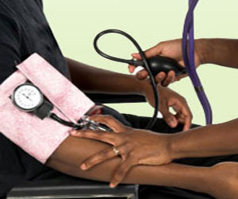

DIZZINESS TREATMENT
CALL EMERGENCY # if:
- A change in vision or speech
- Chest pain
- Shortness of breath
- Rapid, irregular, or very slow heartbeat
- Convulsions or ongoing vomiting
- Dizziness that comes after a head injury
- Double vision
- Fainting or loss of consciousness
- Fever and stiff neck
- Inability to move an arm or leg
- Slurred speech
- Numbness or tingling
1. Treat Symptoms
- The person should sit down or lie still.
- If the person gets light-headed when standing up, the person should stand up slowly.
- Avoid sudden changes in position.
- If the person is thirsty, have him or her drink fluids.
2. Call a Health Care Professional
- This is the first time the person has been dizzy.
- The dizziness is different than before or doesn't go away quickly.
3. Follow Up
- At the health care provider's office or hospital, the next steps depend on the particular case.
- 
- The person may get oxygen or IV fluids to treat dehydration.
- If blood tests reveal abnormal blood chemistry (electrolyte levels), this will be corrected.
- Health care providers may start emergency treatment for heart attack or stroke, blood transfusion, or surgery.